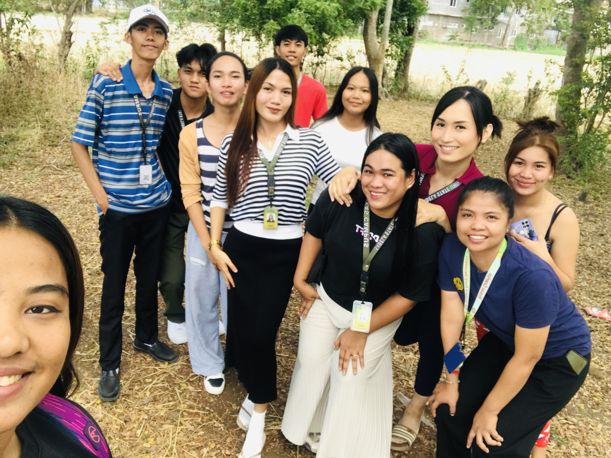
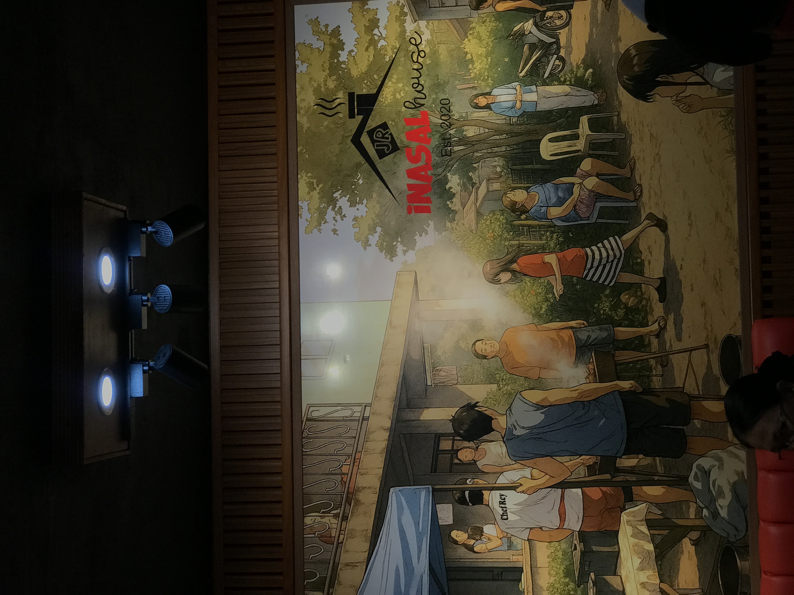
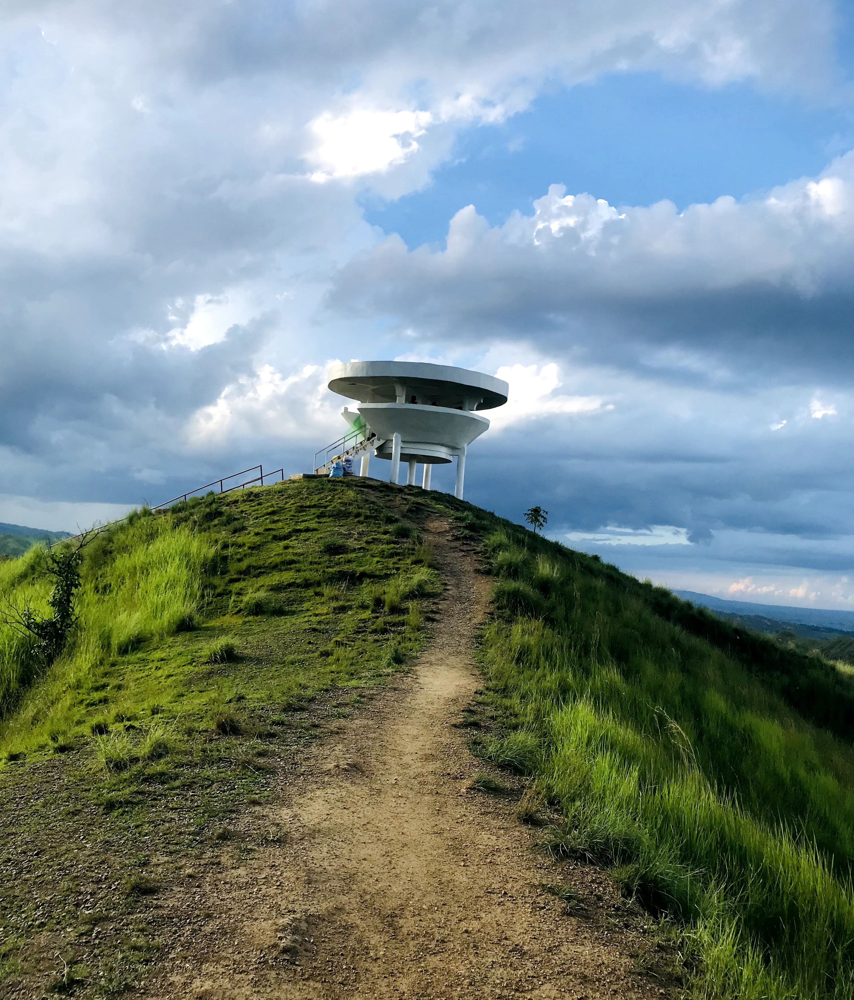
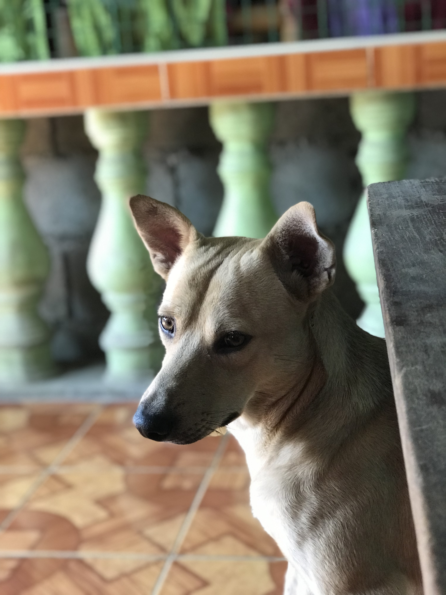
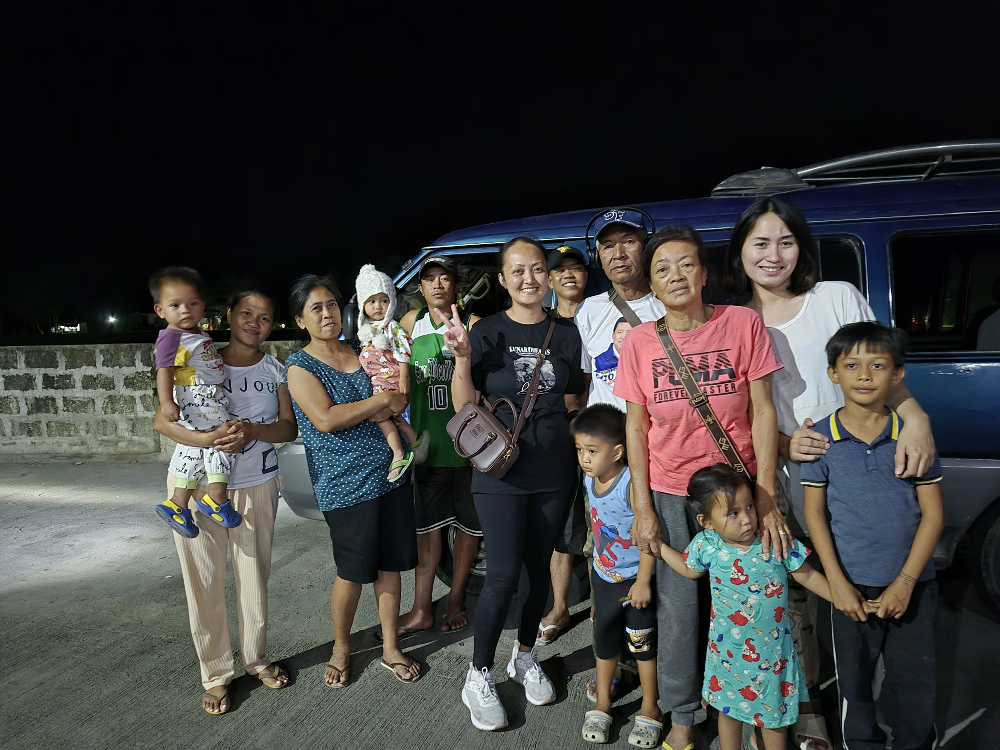

My Photo Gallery
Here are some of my favorite photos and memories:





An Aspiring I.T professional | Isabela State University — Roxas Campus
"I am not who I used to be, and I'm still not finished becoming who I'm meant to be."
Hi! My name is Joel T. Reglos, but my friends call me Julya. I am 26 years old and currently a 2nd Year BSIT student at Isabela State University — Roxas Campus in Roxas, Isabela, Philippines.
People often say I look serious or intimidating when they first meet me. But once we get to know each other, they discover that I'm actually sweet, caring, funny, and a little chaotic. I love making people laugh, cracking jokes, and creating a comfortable atmosphere. I'm also a good listener and always willing to offer advice whenever someone needs it. If you earn my trust, you'll have a loyal, ride-or-die friend who will always have your back.
There was a time when I doubted myself, but I kept going.
Now I am more confident and more focused than ever before.
Every subject I take and every line of code I write brings me one step
closer to the person I am meant to become.
| Full Name | Joel T. Reglos (Julya) |
| Age | 26 years old |
| Course | Bachelor of Science in Information Technology (BSIT) majoring in Web and Application Development |
| Year Level | 2nd Year |
| University | Isabela State University — Roxas Campus |
| Location | Caliguian, Burgos, Isabela, Philippines |
| College |
Isabela State University — Roxas Campus Bachelor of Science in Information Technology 2024 — Present |
| Senior High School |
Burgos National High School Strand=Gas Graduated 2018 |
| Junior High School |
Burgos National High School Completed |
My favorite subjects when I was in High school is Science and now one of my favorite subjects is IT ELEC 3. I love the hands-on nature of IT because it lets me build and create real things that people can actually use.
I am proud of the things I have accomplished both academically and extracurricular. Here are some of my achievements:
"Every award is proof that hard work and believing in yourself truly pays off."
Here are the skills I have developed as a BSIT student and as an individual:
| Skill | Level |
|---|---|
| HTML | Intermediate |
| CSS (Cascading Style Sheets) | Beginner — Intermediate |
| Basic JavaScript | Beginner |
| Microsoft Word | Proficient |
| Microsoft Excel | Intermediate |
| Microsoft PowerPoint | Proficient |
| Basic Programming (OOP) | Beginner |
| Canva (Design Tool) | Proficient |
When I am not studying, here are the things I love to do:
"The best hobbies are the ones that make you lose track of time." — Unknown
My family is my greatest source of strength and inspiration. Everything I do, I do it for them. No matter how difficult school gets, knowing that my family is behind me keeps me going every single day.
I come from Caliguian, Burgos, Isabela — a small but close-knit community where family values and bayanihan spirit are deeply rooted. Growing up here taught me the importance of hard work, humility, and gratitude.
My family may not have everything, but we have each other — and that has always been more than enough to keep me motivated to work hard and make them proud.

"Family is not an important thing. It's everything." — Michael J. Fox
These are the quotes that keep me going every day:
My dream is to become a Full-Stack Web Developer who builds websites and applications that actually help people. I know it takes time and a lot of practice, but I am willing to put in the work every single day.
"Dream big. Work hard. Stay humble." — Unknown
Here are some of my favorite photos and memories:




Feel free to reach out! I am always open to new connections and I would love to hear from you. 😊
| 📧 Gmail | joelreglos46@gmail.com |
| facebook.com/julyasolger | |
| 📍 Address | Caliguian, Burgos, Isabela, Philippines |
| 🏫 School | Isabela State University — Roxas Campus |